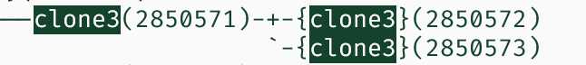

工作随记
Comment先来看一段代码。
1 | int main() { |
syscall() 事实上还是 glibc 的 wrapper。errno 并不能够被 raw 的系统调用获得，只有 glibc 的 wrapper 能干这件事。我用内联汇编写 syscall 指令，errno 立马就不管用了。
问题在于 glibc 是怎么知道 syscall 出了什么问题的，感觉有点头秃。
OK syscalls(2):
Note: system calls indicate a failure by returning a negative error number to the caller on architectures without a separate error register/flag, as noted in syscall(2); when this happens, the wrapper function negates the returned error number (to make it positive), copies it to errno, and returns -1 to the caller of the wrapper.
看到这里，我情不自禁地想问，既然 errno 对 kernel 不可见，那么对于 ptrace(PTRACE_PEEKDATA) 这种调用，它就算在成功的情况下也有可能返回 -38(ENOSYS) 这种东西。我怎么知道这个系统调用是成功了还是失败了？
答案是 ptrace(2):
C library/kernel differences: At the system call level, the PTRACE_PEEKTEXT, PTRACE_PEEKDATA, and PTRACE_PEEKUSER operations have a different API: they store the result at the address specified by the data parameter, and the return value is the error flag. The glibc wrapper function provides the API given in DESCRIPTION above, with the result being returned via the function return value.
其实我觉得这样 wrap 一下真的很干。平白无故给我的理解上了一点强度。譬如在 strace 中
我分明就是用内联汇编调用的。然后你告诉我这里无中生有返回了一个 -1。我觉得不行。
对于我来说，我就想看到最 raw 的系统调用结果。
不过对于我们的 tracer 而言，这些都是小问题。现在我们知道如何设置 errno 了：因为 ptrace 获得的永远都是 raw 的 rval，所以只要改 rval(%rax) 就行了。
关于线程退出状态的问题，可以看一看这个。
1 | void *foo(void *_) { |
如果直接 exit，则会打印 foo exited with 0。但用 return 的就能打出 1 了。说明 pthread 在 foo return 之后果然是使用了一些同步的操作把返回值写进。如果没有这个操作，返回值就彻底丢掉了。
为什么是 0，其实是 join 的时候 pthread 干的。
对于 thread 的认知可能需要更新一下。
首先一个进程默认会有一个初始线程。进程是一个资源单位，而线程是一个调度单位。一个进程可以有很多个线程，包括初始的线程。这些线程之间都是平等的，在操作系统视角来说，没有高低，主次之分。任何线程都可以悄悄地似掉，如果没有其他的同步机制的话，那就真的死掉了。
新创建的线程，只是和创建它的进程同属一个线程组，可以说它是这个进程的子线程，而不能说是之前的线程的子线程。子线程创建新线程，它们依然是平级的。
实验的结果
想要恢复线程，也就是在dump的时候，先研究一下线程之间的关系。然后把cpu上下文装到线程里就行了。
while clone() 是会返回一些 tid 的。理想状况下，应该控制 tid 和之前一样，但是我该怎么做（？）
明日任务：rewrite socket syscall